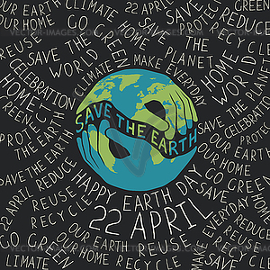
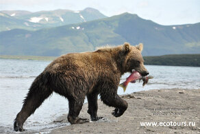

Новости
На главную
Заповедники

Каждый год 22 апреля отмечается не просто большой, а поистине глобальный праздник — Международный день Матери-Земли.
Праздник был учрежден на 63-й сессии Генеральной Ассамблеи ООН в 2009 году. День Матери-Земли 22 апреля дает возможность
каждому жителю во всех населенных уголках планеты выразить благодарность нашему большому общему дому...Читать далее

Тур к медведям на Курильское озеро без вертолета - В царство медведя и лосося. Наблюдение медведей, фото тур на юге Камчатки.
Гвоздь" данной экотуристической программы - посещение уникального Курильского озера на юге Камчатки (Южно-Камчатский государственный
заказник), крупнейшего нерестилища лосося на полуострове. В июле-августе в окрестностях Курильского озера наблюдается высочайшая в
мире концентрация камчатских бурых медведей, которых здесь значительно больше, чем людей...Читать далее
Тур "Сердце Дагестана" - Махачкала - бархан Сарыкум, Дагестанский заповедник - Сулакский каньон, Чиркейская ГЭС - В.Гуниб,
Гунибская крепость, ворота Шамиля - аул-призрак Гамсутль – Кегерское плато - водопад Тобот, Карадахская теснина - Каменная чаша ...Читать далее
 Пять заповедников, где ждут волонтеров - Каждому из 90 российских заповедников, национальных парков и заказников нужны добровольцы.
Волонтерство на природе — ценный опыт помощи людям, животным и растениям, особый вид путешествия, нестандартного доступного отдыха,
с минимальными расходами на питание и проживание...Читать далее
Пять заповедников, где ждут волонтеров - Каждому из 90 российских заповедников, национальных парков и заказников нужны добровольцы.
Волонтерство на природе — ценный опыт помощи людям, животным и растениям, особый вид путешествия, нестандартного доступного отдыха,
с минимальными расходами на питание и проживание...Читать далее
Каждый год 22 апреля отмечается не просто большой, а поистине глобальный праздник — Международный день Матери-Земли.
Праздник был учрежден на 63-й сессии Генеральной Ассамблеи ООН в 2009 году. День Матери-Земли 22 апреля дает возможность
каждому жителю во всех населенных уголках планеты выразить благодарность нашему большому общему дому...Читать далее